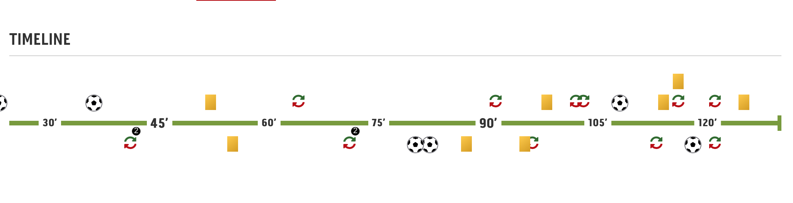
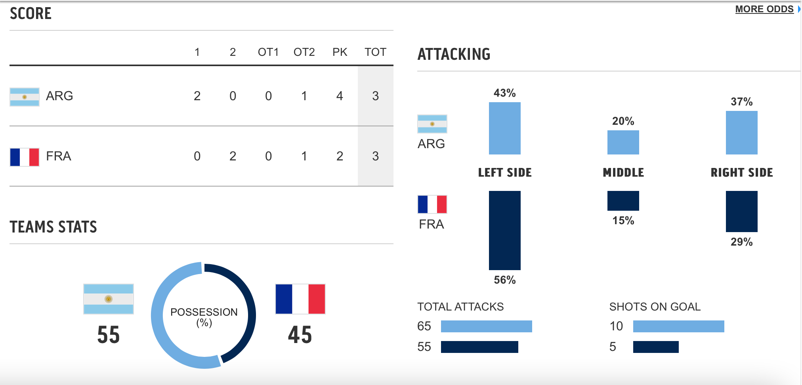
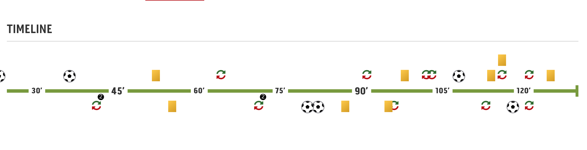
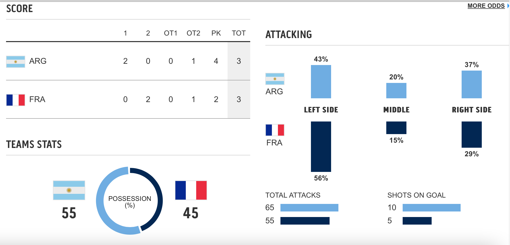

QATAR 2022- Analyzing The Fifa World Cup Through Rakeeth's Eyes
-
Qatar headlines Messi vs Mbappe, both players meeting for the First Time
in World Cup Finals History
-
With Ronaldo out, Messi has more pressure to receive the goat title, as
critics will view his loss as a relegation
-
This is Messi's last chance to bring Argentina what they feel they
deserved the most through his Messi's legacy, a trophy
thisisthelinkfortsn

 





Ángel Di maría Secures the Second Goal for Argentina
-
Adding more pressure towards the French revolution, this is Mbappes time to
shine- He has been sagging off the first half, and hopefully can regain the
motivation and momemtum required to equalize or solely capitalize
-
Argeninas superior first half defense may have deteriorated and will make it
more arduous for them to keep the same pace and pressure for the second half